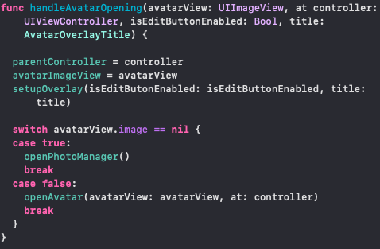

FALCON MESSENGER REPORTE DE APP MÓVIL
Análisis UI/UX
Análisis de Performance
Librerías
Generalidades
Colores y fuentes
En general el manejo de los colores está bien ya que se resaltan bien en modo oscuro y claro. El estilo de letra es claro y el tamaño adecuado.
En cuanto a la distribución de los elementos están distribuidos adecuadamente alrededor de la pantalla y son fácilmente accesibles.
vista 1.1: autenticación
En la vista 1 se solicita al usuario autenticación por medio de su número telefónico local. Accediendo a una base de datos remota, desplegada en Firebase que almacena la lista de los usuarios registrados en la aplicación.
Como se puede ver, esta vista restrige el acceso a otras vistas antes de ser completada por el usuario.
vista 1.2: registro
Aquí, si es la primera vez que el usuario se registra con su número telefónico, esta vista se despliega solicitando al usuario su información básica de perfil. Así, el usuario puede detallar su nombre, su imagen de perfil, y una breve descripción del mismo.
vista 2: contactos
Una vez autenticado e identificado el usuario, una de las vistas principales al alcance del usuario en el mismo nivel de jerarquía en la navegación, es la que le permite consultar los contactos almacenados en el dispositivo.
Adicionalmente, aquí realiza una consulta en Firebase por los contactos del teléfono que estén resistrados en las bases de datos remotas. De esta forma, se sabe que es otro usuario registrado, y se puede empezar un proceso de chat con éste.
vista 3: settings
En esta vista el usuario puede editar la configuración básica de funcionamiento de la aplicación, así como su información básica de perfil.
vista 3: Lista de chats
En esta vista el usuario puede ver sus conversaciones y
realizar algunas acciones como eliminar, leer o
archivar.
También puede accender al perfil de usuario de las
personas con quienes tiene conversaciones activas.
vista 4: Chat
En esta vista el usuario puede conversar con otros
usuarios. Puede adjuntar elementos de texto, audio,
imagen, o video.


La temperatura del celular no aumenta demasiado con el uso de la
aplicación
Por lo general el consumo de red es bajo. Y la sincronización
general de los contactos.
00:18
En cuanto a memoria, en el segundo 18 hay un aumento de memoria de 21,26 MiB a 26,52MiB debido a que se carga la imagen que el usuario tenía de perfil.
00:45
Aumenta en el segundo 45 debido a que se está enviando la nueva información del usuario y se tienen que cargar los chats y las imágenes de los contactos registrados en Falcon messenger.
00:57
En el segundo 57 que pasa de 26,52MiB a 50,10 MiB se da porque al cargarse los chats del usuario se tienen que cargar las imágenes miniatura de los usuarios y sincronizar los contactos.
01:08
En el minuto 1:08 aumenta debido a que se está enviando el archivo de audio entonces tiene que guardarlo en firebase.
01:12
Posteriormente en el minuto 1:12 hay un aumento a 55,59MiB debido a que se carga la foto de la galería del celular.
01:17
En el minuto 1:17 es donde más alto se da el consumo de red que llega hasta 196,59KiB debido a que se realiza el envío de una imagen y se tiene que cargar a firebase.
01:27
Posteriormente en el minuto 1:27 pasa a 66,05 MiB debido a que se tiene que se amplía la imagen del usuario por lo que se guarda. Igualmente ocurre cuando se abre la imagen de perfil de un contacto. En general la cantidad de memoria es buena ya que no pasa de 90MiB.
Threads Y cómo éstos afectan el performance
¿Cómo funciona?
Steps donde la conectividad importa ü§ì
-
Envío de mensaje de verificación
Antes y al solicitar reenvío

-
Verificación del código Two Steps Auth
Cuando se va a iniciar el proceso de verificación del código de autenticación en dos pasos
-
Obtención de credenciales
Antes de intentar obtener la credencial de acceso
-
Edición del profile
Cuando se van a guardar los datos del usuario (Foto, nombre, teléfono y estado)

-
Zona de Chatting
Lista de mensajes y chat
Librerías
1. ThemeManager - Local
Se encuentra en Support/ThemeManager
Se usa para cambiar la vista general de la aplicación entre
oscuro y claro mediante el método applyTheme.
Esto cambio los colores generales de fondo y letra de
TabBar, NavigationBar,
TableViewCell , Botones y TextField
2. ARSLineProgress - Externa
Se usa la librería ARSLineProgress para mostrar
la animación en el centro de la pantalla que indica al usuario
que está procesando.

3. AvatarOpener - Usa un pod externo para la edición
Se encuentra en Support/UserProfilePictureOpener
Se usa para controlar todo el acceso relacionado a las
imágenes.
handleAvatarOpening
recibe una imagen, un controlador, una variable que
define si la foto se puede editar y un título. Con esto
construye la vista. Si no existe aún una foto llama al
método
openPhotoManager y si ya existe llama al
método openAvatar. 
El método
openPhotoManager, como se da
cuando no existe una foto, despliega al usuario una
alerta para que elija entre elegir una foto de la
biblioteca (openGallery) o tomar una foto
con la cámara (openCamera). - Los métodos
openGalleryera primero hacen todas las
validaciones de permisos antes de acceder y si no tienen
permiso muestran alerta CropViewController
externo) para posteriormente editarla con opciones
básicas de edición: Girar, restaurar y editar tamaño.
4. Public - Local
Se encuentra en Support/Public
En general tiene varias cosas más relacionadas al manejo de
archivos, imágenes y también de la parte gráfica como scroll o
mostrar y ocultar ciertos elementos gráficos. Sin embargo,
también contiene diversas extensiones que se usan a lo largo
de toda la aplicación. Por ejemplo:

5. SDWebImage
Esta librería se usa cuando se recuperan las imágenes de internet y guardarlas en caché. Por ejemplo cuando se descarga la foto de usuario en Falcon de un contacto y se muestra en una tabla.
Generalidades (puede hacer scroll dentro de las vistas)
En general la aplicación utiliza el patrón de
arquitectura modelo, vista, controlador ya que es lo
común en las aplicaciones de iOS.
Se evidencia el uso constante del patrón de diseño
observer ya que la aplicación en general tiene que estar
pendiente cuando cambia el tema de la aplicación general
y cuando hay algún cambio en los chats como que llegue
un mensaje nuevo, se cree un nuevo grupo o se edite
alguna configuración.
La aplicación en general usa caché para el almacenamiento de imágenes que se muestran frecuentemente como la foto de un contacto o la foto de perfil personal. Para esto se usa la librería SDWebImage.
En general, la aplicación maneja correctamente el uso de sus recursos y los permisos que requiere del usuario. No le solicita fuera de contexto acceso adicional o permisos extra.
Se realizó pull request al repositorio principal para que todos los cambios propuestos implementados sean parte del proyecto oficial.

El repositorio actualmente cuenta con 237 estrellas y
tiene 72 Forks.
Es necesario resaltar que todo el código estaba en
Swift 4.3 y se realizaron todas las
modificaciones necesarias para que esté ahora en
Swift 5
Tiene 7 issues reportados que están abiertos y 5 cerrados
Cuenta con dos contribuidores principales a la rama Master pero según el número de commits se podría decir que solo RMizin.